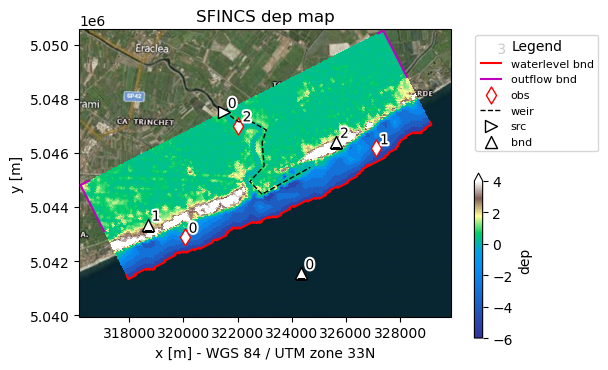

Tip
Add geometries to model from Python#
In this example, the previously made SFINCS compound flood model will be extended with observation points and other geometries.
The model is situated in Northern Italy, where a small selection of topography and bathymetry data has already been made available for you to try the examples.
[1]:
from pathlib import Path
from hydromt_sfincs import SfincsModel
from hydromt._utils import log
Steps followed in this notebook to build your SFINCS model:
Initialize SfincsModel class, set data library, mode and root folder
Add weirfile
Add observation points
Show model
Save all files
Let’s get started!
1. Initialize SfincsModel class, set data library, mode and root folder:#
Before we can use all the tools provided by HydroMT-SFINCS, we have to initialize the SfincsModel instance. This creates a shortcut to all the model components and methods to read, write and create these components.
In contrast to the previous notebook, we now initialize the model in “append” mode: “r+”, to make sure we can upgrade some of its components.
[2]:
model_root = "tmp_sfincs_compound"
# Initialize logging, the lower the log level number, the more verbose (more info) the output
# NOTSET=0-9, DEBUG=10, INFO=20, WARNING=30, ERROR=40, CRITICAL=50
log.initialize_logging()
log.set_log_level(log_level=20)
# Add file handler to log to a file
log_file = Path(model_root) / "hydromt_sfincs.log"
logger = log._add_filehandler(log_file)
# Initialize SfincsModel Python class with the artifact data catalog which contains publically available data for North Italy
sf = SfincsModel(
data_libs=["artifact_data"], # specify which data libraries to use
root=model_root, # specify the root directory for the model
mode="r+", # specify the mode for opening the model (r=read only, r+=append, w=write, w+=overwrite
write_gis=True, # specify whether to write GIS data
)
2026-01-27 08:29:45,139 - hydromt.data_catalog.data_catalog - data_catalog - INFO - Reading data catalog artifact_data latest
2026-01-27 08:29:45,140 - hydromt.data_catalog.data_catalog - data_catalog - INFO - Parsing data catalog from /home/runner/.hydromt/artifact_data/v1.0.0/data_catalog.yml
2026-01-27 08:29:45,809 - hydromt.model.model - model - INFO - Initializing sfincs model from hydromt_sfincs (v2.0.0.dev0).
2026-01-27 08:29:45,809 - hydromt.model.model - model - WARNING - No region component found in components.
Let’s get started!
2. Add weirfile:#
In SFINCS, a weirfile is often used to explicity account for line-element features such as dikes, dunes or floodwalls. Read more about structures in the SFINCS manual
[3]:
# In this example specify a 'line' style shapefile for the location of the weir to be added
# # NOTE: optional: dz argument - If provided, for weir structures the z value is calculated from the model elevation (dep) plus dz.
sf.weirs.create(
locations=r"data/compound_example_weirfile_input.geojson",
dz=7.7,
merge=False,
)
2026-01-27 08:29:45,979 - hydromt.data_catalog.sources.data_source - data_source - INFO - Reading compound_example_weirfile_input.geojson GeoDataFrame data from /home/runner/work/hydromt_sfincs/hydromt_sfincs/docs/_examples/data/compound_example_weirfile_input.geojson
Weir point 321599.2183972707 5047623.297730446 has no elevation data. Filled now with nearest non-NaN value. Please check your input!
3. Add observation points:#
Observation points can be used to monitor water levels (and other parameters) in points specific locations on a higher temporal frequency. For more info about what the obsfile is, click here
[4]:
# Loading a point shapefile clicked by user:
# NOTE: merge=True makes HydroMT merge the new observation points with already existing observation points (if present)
sf.observation_points.create(
locations=r"data/compound_example_observation_points.geojson", merge=False
)
2026-01-27 08:29:46,035 - hydromt.data_catalog.sources.data_source - data_source - INFO - Reading compound_example_observation_points.geojson GeoDataFrame data from /home/runner/work/hydromt_sfincs/hydromt_sfincs/docs/_examples/data/compound_example_observation_points.geojson
4. Show model:#
[5]:
# Use predefined plotting function 'plot_basemap' to show your full SFINCS model setup
_ = sf.plot_basemap(
fn_out="basemap.png",
variable="dep",
plot_geoms=True,
plot_bounds=True,
bmap="sat",
zoomlevel=12,
)

5. Save all files#
[6]:
sf.write() # write all
2026-01-27 08:29:49,213 - hydromt.hydromt_sfincs.utils - utils - INFO - No changes detected; skipping write to /home/runner/work/hydromt_sfincs/hydromt_sfincs/docs/_examples/tmp_sfincs_compound/sfincs_netbndbzsbzifile.nc
⚠️ Note: If you encounter a PermissionError when writing the model, it’s likely because another notebook or process currently has the NetCDF files with boundary conditions open. This can happen when multiple Jupyter kernels access the same .nc file simultaneously. 👉 To resolve it: • Save your work in other notebooks using this file. • Restart or close those kernels. • Then rerun this notebook.
💡 Note: GIS files are written for your geometries into the gis subfolder in the model root. These files are not used by the SFINCS model, but can be handy when visualizing the model in QGIS or ArcGIS.
Now you have made an update model, you can progress to the notebook: Run SFINCS Model.